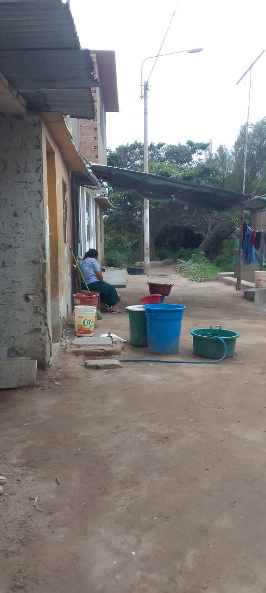
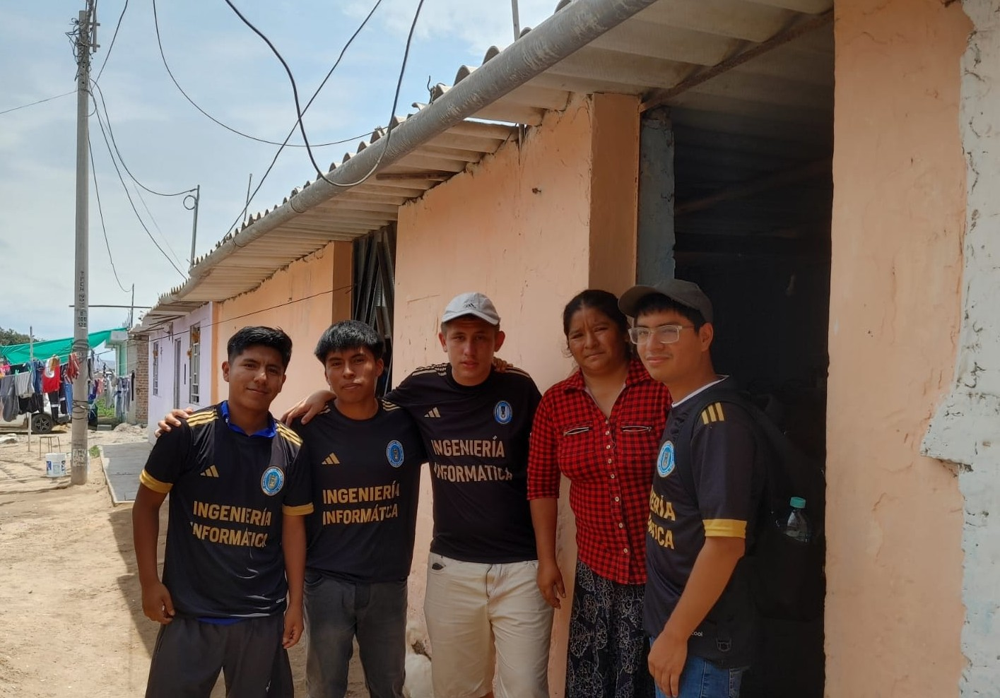

Diagnóstico del Problema
El caserío San Miguel presenta dificultades en la recopilación y organización de información comunitaria, lo que limita la toma de decisiones y la elaboración de documentos formales.
Empadronamiento Digital
El empadronamiento digital permite recopilar datos de manera ordenada, rápida y segura, facilitando el análisis y la elaboración de documentos oficiales para las autoridades.

Equipo del Proyecto
Grupo responsable del desarrollo del sistema de gestión de información comunitaria, comprometido con la innovación y el desarrollo local.
